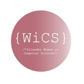

Organizations
Islander Women in Computer Science (iWICS)
President (May 2020-Present)
Secretary (January 2018-May 2020)
A gender-inclusive, empowering, and representation group for the women studying or interested in purusing computer science. This group serves as a way to make friends with like-minded people and we also provide homework help and support. We have study sessions based on courses along with meetings. We have women ranging from freshman to even graduate students.
Cyber Defense Club
Member (May 2019-Present)
The Cyber Defense Team focuses on sharing a wide range of computer knowledge related to server administration, operating systems, cyber security, adn computer networking. The Cyber club also competes in the National Collegiate Cyber Defense Competition and other cyber security competitions. We work hands-on with various materials such as Microsoft and Linux Server Administration, CISCO Networking, IT Security and Oracle Database Administration.